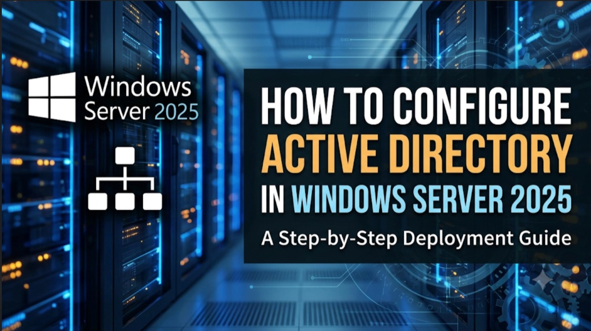

Test Project
1 Mins
Duplicate
Test Summary
Senior IT Infrastructure Lead with 8+ years directing high-availability VMware virtualization, Zero-Trust Microsoft Entra ID hybrid governance, multi-tier enterprise storage, and mission-critical Commvault disaster recovery pipelines under stringent GxP regulatory audit compliance.
I am a results-driven IT Infrastructure Lead and Systems Manager with extensive hands-on and leadership experience spearheading high-availability virtualization, hybrid cloud identity governance, multi-tier storage management, and mission-critical disaster recovery pipelines.
Throughout my 8+ years in the enterprise space, my priority has been maintaining uninterrupted business operations. I specialize in deploying resilient VMware ESXi & vCenter clusters with 99.9% uptime, orchestrating Microsoft Entra ID (Azure AD) under strict Zero-Trust paradigms, and architecting automated Commvault DR pipelines validated through quarterly live drill simulations under stringent GxP regulatory audit standards.
Introducing Jenkins task automation and Shell scripting to eliminate repetitive sysadmin overhead by 30%.
Sustaining 99.9% virtualization availability, strict RPO/RTO SLAs, and seamless GxP pharmaceutical audit compliance.
Mentoring L1/L2 engineering talent, formulating clear SOP documentation, and facilitating proactive cross-team support.
Explore the six core technical disciplines alongside four real-world mission-critical engineering implementations designed for uninterrupted 24/7 enterprise operations.
Directing multi-site VMware ESXi and vCenter clusters (7.x/8.x) supporting 50+ virtual machines and physical host nodes. Engineering DRS, HA failover clustering, host profiles, and continuous compute balancing to sustain 99.9% uptime across production environments.
Governing Microsoft 365 and Microsoft Entra ID (Azure AD) hybrid infrastructure for 1,000+ active directory accounts. Implementing granular Conditional Access policies, geofencing parameters, Azure AD Connect sync, and enterprise MFA under Zero-Trust.
Architecting end-to-end Commvault enterprise backup strategies spanning on-premise SAN/NAS arrays and cloud tiers. Executing quarterly live DR restoration drills to satisfy strict pharmaceutical regulatory compliance, consistently meeting RPO (<1 hr) and RTO (<4 hrs) SLAs.
Spearheading enterprise endpoint defense with SentinelOne EDR/XDR, automated patch distribution, Active Directory GPO hardening, and acting as primary technical lead for stringent GxP computerized system validation (CSV) audit verifications.
Administering critical network backbones including multi-site Active Directory Domain Services (AD DS), DNS, DHCP failover scopes, secure site-to-site VPN tunnels, VLAN traffic segmentation, and perimeter URL filtering via Websense.
Standardizing service operations via ITIL v4 frameworks, leading P1/P2 root cause analysis (RCA), and sustaining a 98%+ SLA rate. Deploying Jenkins automation and Shell scripts to eliminate 30% of repetitive sysadmin administrative overhead.
Engineered a unified virtualization cluster across multi-site production facilities supporting 50+ critical application and database VMs with zero single points of failure.
Transitioned 1,000+ Active Directory objects to a hardened Microsoft Entra ID hybrid ecosystem with unified Zero-Trust security and conditional access controls.
Designed an enterprise disaster recovery and business continuity framework satisfying stringent pharmaceutical regulatory mandates with rigorous verification drill cycles.
Eliminated repetitive manual sysadmin procedures and human error across production servers by building automated Jenkins CI/CD maintenance pipelines.
An 8+ years chronological record of enterprise infrastructure engineering, cloud observability, and systems operations leadership.
Administered high-capacity digital storage arrays, high-throughput video transcoding clusters, and scheduled archive restorations.
Oversaw IT retail hardware asset lifecycle, vendor warranty contracts, point-of-sale (POS) terminal reliability, and weekly executive status reporting.
Filter through specialized enterprise technology domains to review infrastructure platforms, security controls, and operational tooling.
Field-tested architectural blueprints, operational playbooks, and systems leadership lessons across enterprise virtualization, Zero-Trust identity, and mission-critical disaster recovery.
Test Summary

Active Directory Domain Services (AD DS) is the central authority for identity, authentication, and security policies in a Windows environment. In Windows Server 2025, establishing a Domain Controller remains a strict two-phase process: first, installing the AD DS server role, and second, promoting the server to act as a Domain Controller.
Explore live cluster status, SLA metrics, technical arsenal, and contact channels directly from an interactive command terminal.
Connect directly regarding senior infrastructure leadership opportunities, enterprise consultations, or technical advisory engagements.
Fill out this form to connect via email or dispatch directly to WhatsApp.